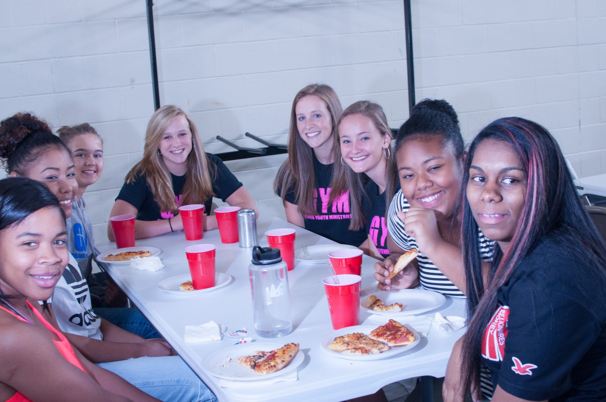

Go deeper. Ask harder.
Tools to study the Bible, think clearly about faith and find help for real life.
Tools we actually use.
Short on time? Pick three set study times a week, and let an audio Bible or podcast fill the drive to school or work.
Truth in two.
A biblical perspective on current events and Bible truths, in two minutes or less.
Got a question you'd like answered in two minutes? Email us with the subject line "Question for Truth in Two."
Know why you believe.
Our ten-week apologetics class met Thursday nights at The Upper Room Coffee House, in person and online. Past sessions were recorded, so you can work through the course from home.
Want to know when the next class runs? Let us know.
Words worth reading.
Reflections on purpose, purity, questions, culture and the life of the church.
What Is Accountability, and Whose Responsibility Is It to Initiate?
We should strive to keep each other accountable as we all strive to be more like Christ.
What Gives Life Value?
There is nothing harder than seeing someone you know and care about fight…

Dare's Five Year Anniversary
In the world of planning, it is common practice to ask yourself where you…
In All Things
In December of 2019, my wife and I went on our second cruise…
Effectiveness
Take a second, and look at the picture above. Do you see it?
The Upper Room Coffee House: Launch
I am a firm believer that every individual needs three types of people in their life…
How to Study the Bible
Practical tools and rhythms for digging into God's Word.
Joys of Fall
It is fall. The leaves are changing, the air is frosting…
Purity for Men
Is purity really that important? Men, the world tells us…
Infinity War: A Quick Look at Thanos
Well, it is finally here: the movie that everyone has been waiting for…
The Millennial Disconnect
Let's be real for a second. It is no secret that Millennials have a desire…
Life
What gives life value? What gives your life value?
Questions
Is it wrong to question God? We are faced with so many questions…
Ministry
The vision of Dare Ministries is to prepare young Saints for a lifetime of ministry.
The Dare Quarterly.
Stories, photos and prayer needs, three months at a time.
You don't have to carry it alone.
Jesus came that we may have life, and have it abundantly (John 10:10). That includes our minds and hearts.
Mental health
If you or a friend is struggling, reach out. You can report a concern anonymously through Safe2Tell.
Unplanned pregnancy
Caring, confidential support for moms and families in Colorado Springs.
Prayer & questions
Have questions about life, Jesus, or anything you're facing? Someone who loves Jesus and loves you will get back to you.
Dare Ministries is not made up of certified counselors or healthcare practitioners. In an emergency, call or text 988 (Suicide & Crisis Lifeline) or dial 911.